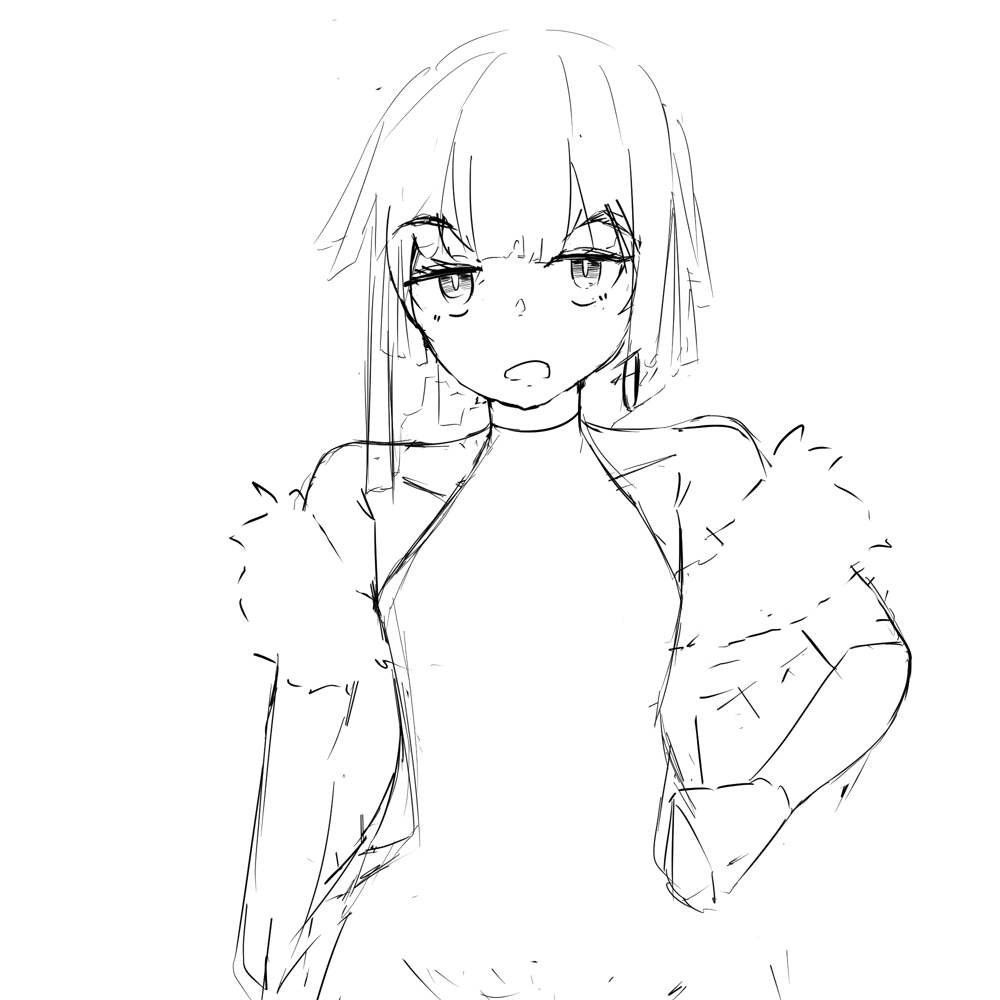
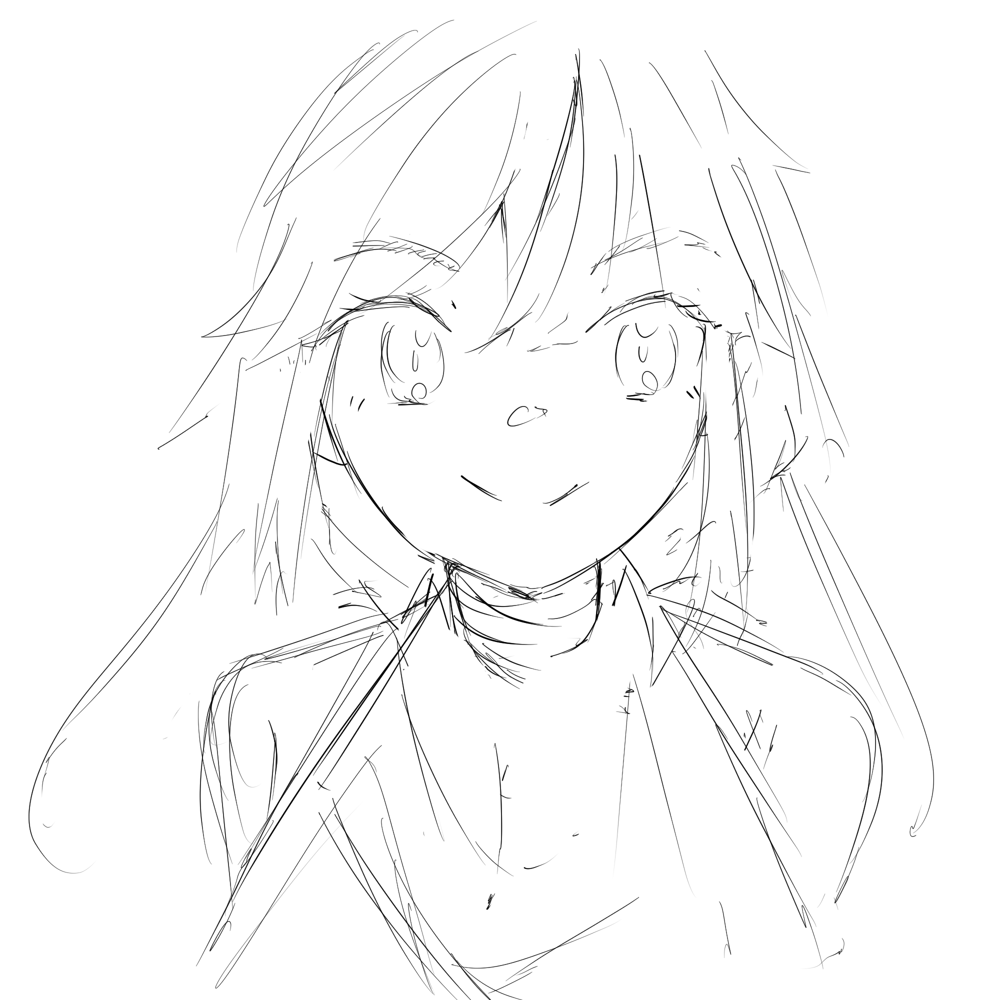

Dev Log 1: Project Creation and Thoughts.
Hello anyone,
Making this page to document my process and my thoughts throughout the whole creation of my personal RPG named Project:YUME. So far theres not much but artworks made for the protagonist of the story.
Project Scope
The core engine of choice that I will be using to develop this project will be Godot 4. I will try to keep the scope of the project small so as to not get burnt out from development. so nothing too overambitious. I just want to ship something out, something playable, something at all.
Next Steps
Moving forward, the primary focus will be finishing up character design sheets and a rough outline of the story. I will try to do these logs monthly so hopefully I can have somthing meaningful to show for next month.
Key deliverables for next month:
- Finalized character design reference sheets
- Rough narrative and story beat outline
- Initial Godot 4 project skeleton & basic movement test
So yeah thats bout it. heres some art i've made so far. not all, just some im comfortable showing now. till next month -w-


